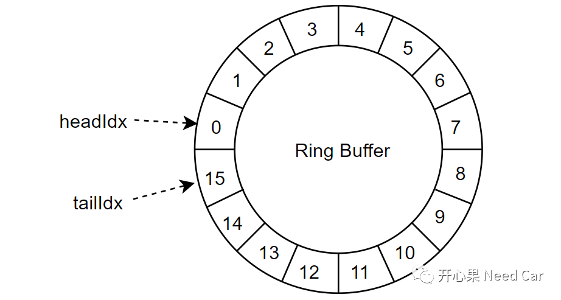
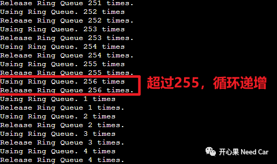
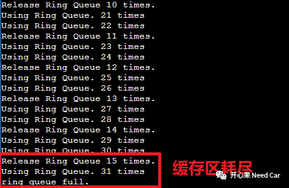

开心果 Need Car · 2024-01-05T07:34:00+08:00 · 微信原文
"一千个读者就有一千个哈姆雷特"，同样，一千个软件开发者就有一千种软件设计风格。同样一个功能需求，不同的设计者有不同的思路。工程中，我们可能会面对这样一个场景：资源有限，但是，又要按照信息缓存的先后顺序输出。举例：利用串口输出log信息，由于使用串口的模块有多个，也就意味着某些信息无法及时输出，需要暂存，而且这些信息需要按照缓存的顺序依次打印，如果缓存的顺序不对，将影响问题的排查和分析。
面对如上的工程场景，大家可能会想到用循环队列。本文，基于循环队列和uint8数据类型的特点，设计一种方案，以此实现顺序输出缓存信息的功能。
1、循环队列
什么是循环队列呢？在理解循环队列之前，我们先搞清楚Ring Buffer概念。受限于硬件资源（eg：RAM空间不足），我们不能一次开辟太大的空间缓存信息。为了节约资源，可以将一段连续的内存空间循环利用，即：从头（eg：编号0）使用到尾（eg：编号15），之后，再从头开始使用。其中，每个缓存区的大小根据项目情况设定（eg：200 bytes），如此，如下的缓存区需要使用16*200 = 3200 bytes即可，如果觉得还是太大，可以根据实际需要，降低每个缓存区大小（eg：50 bytes）。

2、代码示例
设计一个功能，自然离不开对象（Object）的构建，C语言中，构建对象的最佳选择就是结构体（struct）。本文构建的RingQueue_ObjectType如下所示：
typedef enum{RINGQUEUE_STATUS_IDLE = 0,RINGQUEUE_STATUS_PENDING ,}RingQueue_Enum;typedef struct{RingQueue_Enum elementStatus;uint8_t elementCnt;char elementArr[RINGQUEUE_ELEMENT_LEN];}RingQueue_ElementType;typedef struct{uint8_t headIdx;uint8_t tailIdx;RingQueue_ElementType elementNum[RINGQUEUE_ELEMENT_NUM];}RingQueue_ObjectType;
RingQueue_ObjectType RingQueue_Obj = {0x00};static void RingQueue_Using(void);static void RingQueue_Release(void);static uint32_t cnt_test;int main(){while(1){cnt_test++;if ((RINGQUEUE_IDX(RingQueue_Obj.headIdx) == RINGQUEUE_IDX(RingQueue_Obj.tailIdx)) \&& (RingQueue_Obj.headIdx != RingQueue_Obj.tailIdx)){/* ring queue full */printf("ring queue full.\n");break;}if(0 == (cnt_test % 10)){RingQueue_Using();}if(20 == cnt_test){cnt_test = 0;RingQueue_Release();}}return 0;}static void RingQueue_Using(void){RingQueue_Obj.elementNum[RINGQUEUE_IDX(RingQueue_Obj.tailIdx)].elementStatus = RINGQUEUE_STATUS_PENDING;memcpy(&RingQueue_Obj.elementNum[RINGQUEUE_IDX(RingQueue_Obj.tailIdx)].elementArr[0],\"Using Ring Queue.",sizeof("Using Ring Queue."));printf("%s %d times\r\n",&RingQueue_Obj.elementNum[RINGQUEUE_IDX(RingQueue_Obj.tailIdx)].elementArr[0],RingQueue_Obj.tailIdx+1);RingQueue_Obj.tailIdx++;}static void RingQueue_Release(void){printf("Release Ring Queue %d times.\r\n",RingQueue_Obj.headIdx+1);if(RINGQUEUE_STATUS_PENDING == RingQueue_Obj.elementNum[RINGQUEUE_IDX(RingQueue_Obj.headIdx)].elementStatus){RingQueue_Obj.elementNum[RINGQUEUE_IDX(RingQueue_Obj.headIdx)].elementStatus = RINGQUEUE_STATUS_IDLE;RingQueue_Obj.headIdx++;}}


往期精彩回顾
工程问题：数据一致性被破坏，导致DMA CRC校验失败
Uds诊断：这几个诊断问题，你能回答几个？（五）